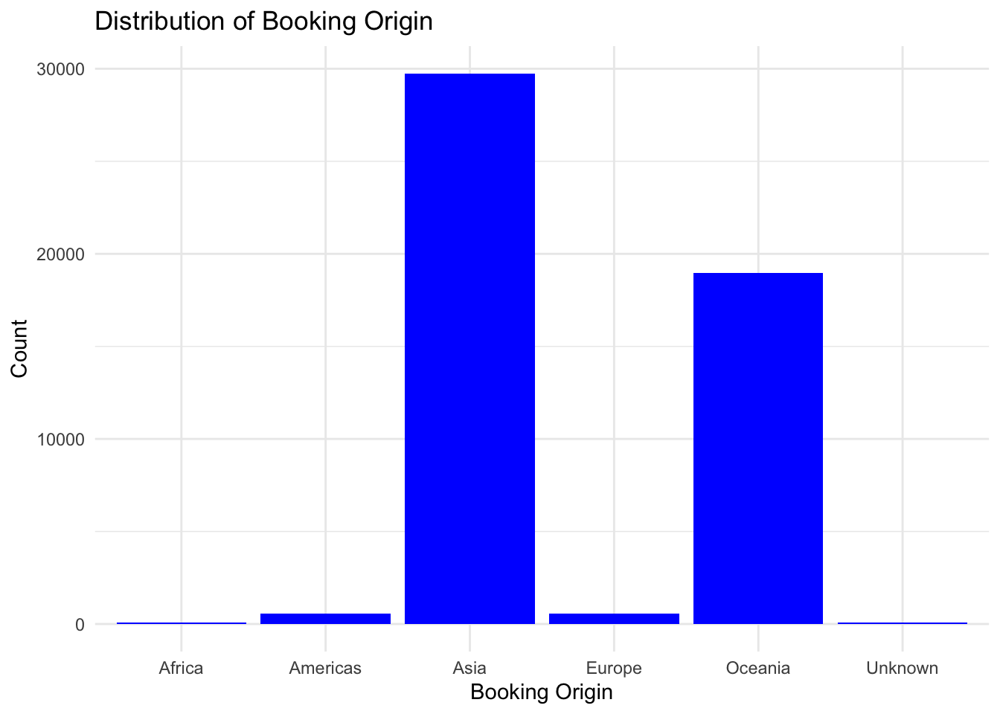
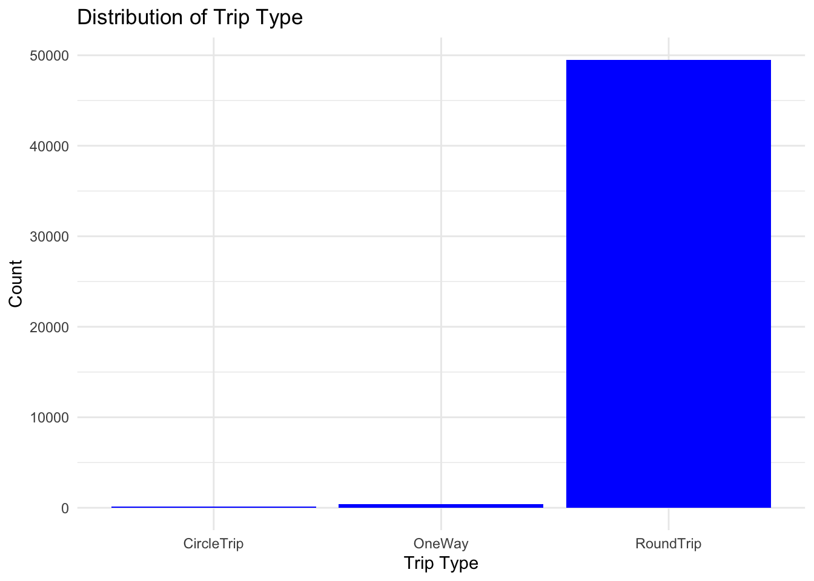
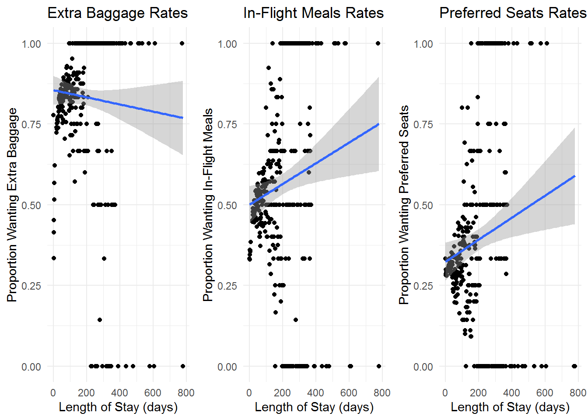
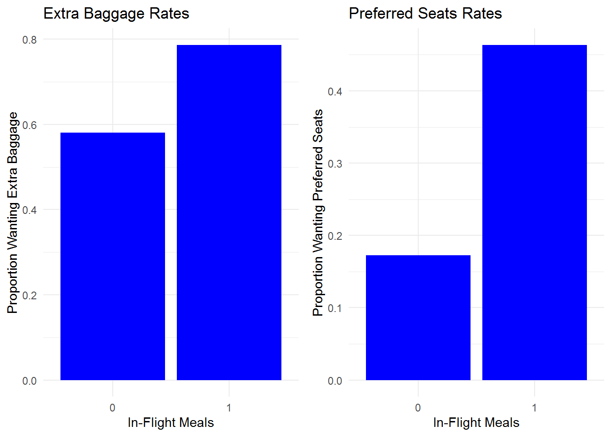
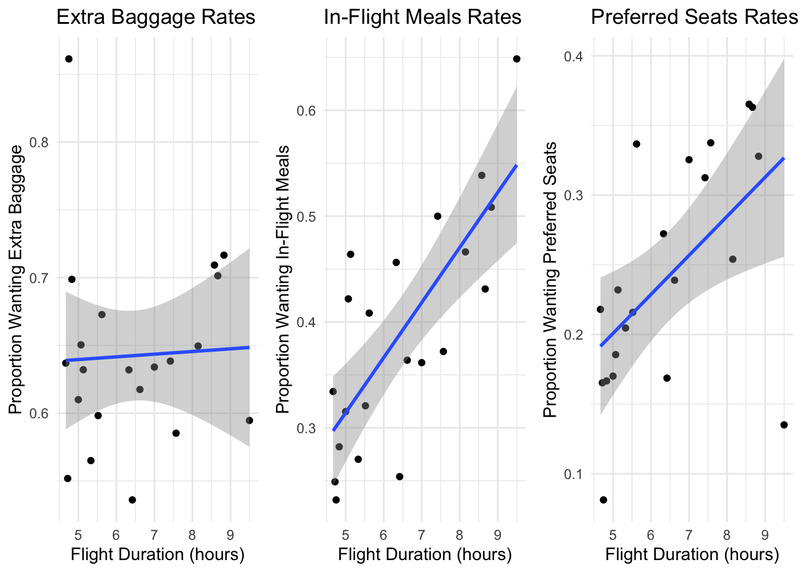
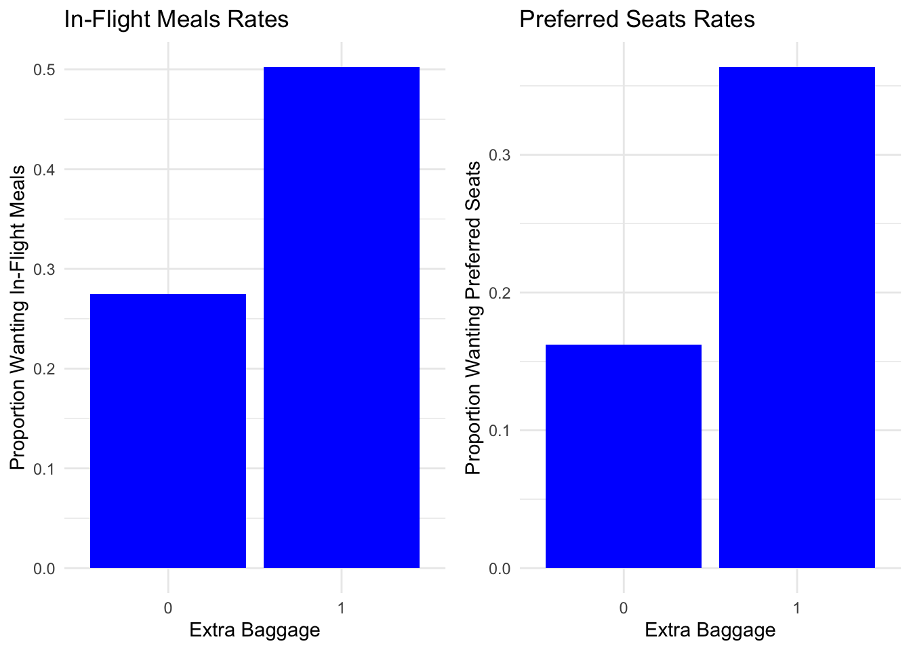
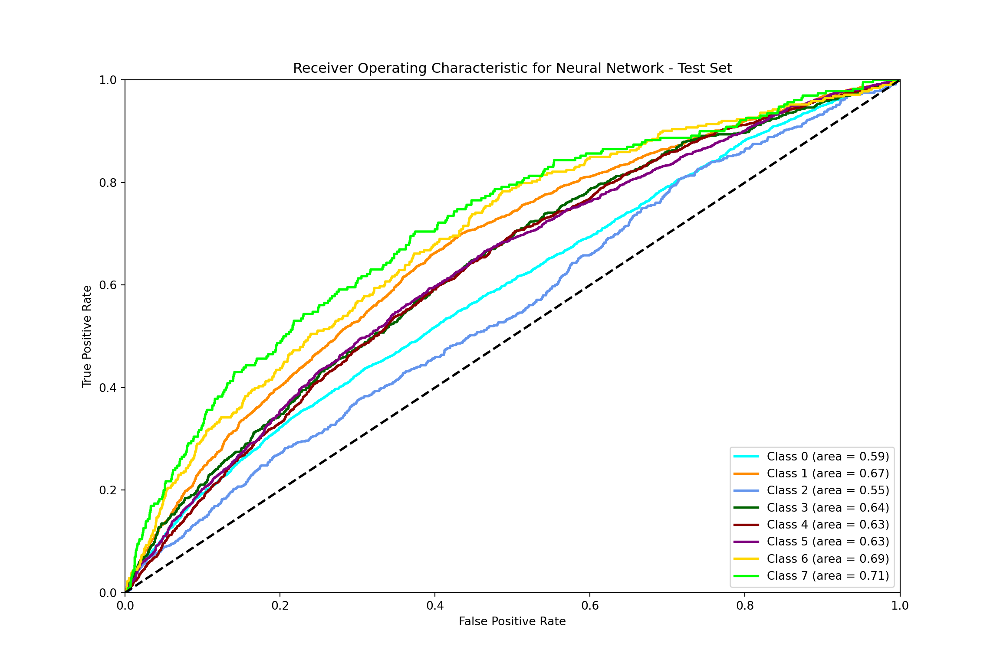
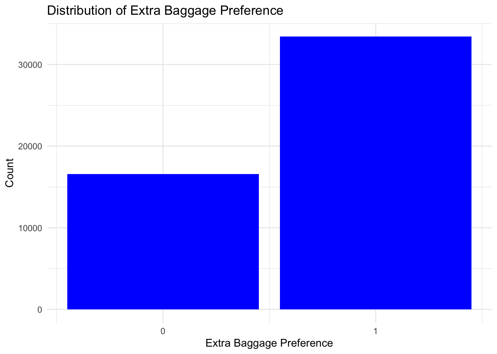
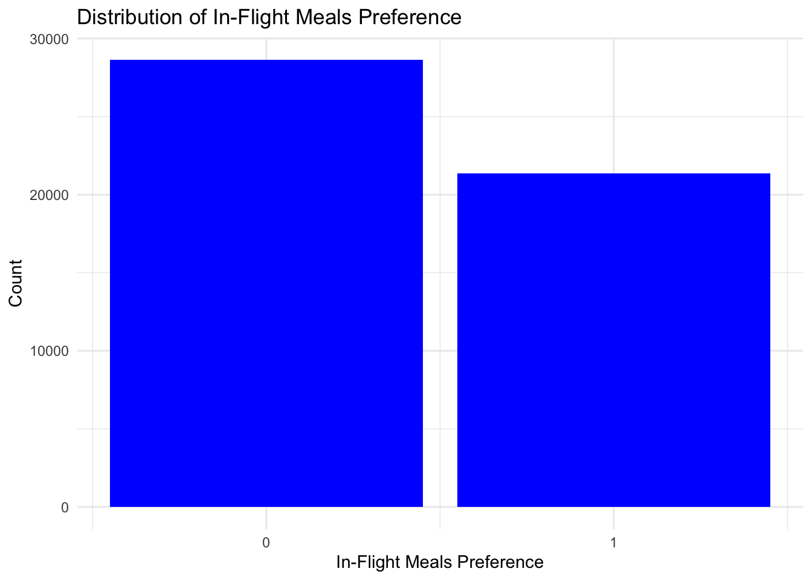
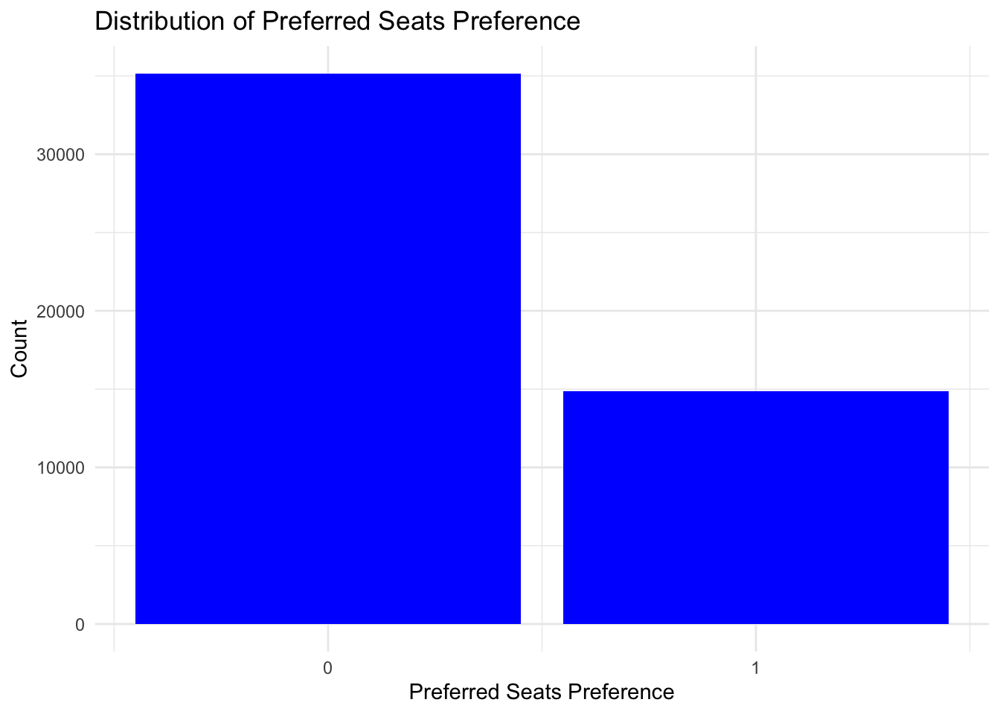

Abstract: | The following machine learning project focuses on…
Introduction
Overview and Motivation
In the fast-paced world of air travel, airlines face a dual challenge: maintaining operational efficiency while personalizing the travel experience for their passengers. Key aspects that greatly influence passenger satisfaction include baggage handling, preferred seating, and in-flight meals. Each of these elements represents significant opportunities for airlines to enhance customer experiences and optimize their ancillary services.
The project aims to harness machine learning to predict and analyze passengers’ choices regarding baggage, preferred seating, and in-flight meal options. By examining a range of influencing factors, such as trip duration and purpose, the project seeks to generate actionable insights that airlines can use to improve operational efficiency and tailor their services to individual customer preferences.
Our motivation stems from the logistical and customer service challenges faced by airlines when handling passengers’ preferences efficiently. Accurate prediction models will help airlines anticipate the demand for different services, from baggage needs to specific seating and meal preferences. This, in turn, will allow them to allocate resources more effectively and design better marketing strategies, enhancing customer satisfaction and maximizing revenue from ancillary services.
Data
Our project’s dataset, titled “Airlines Booking” and compiled by Anand Shaw, is sourced from Kaggle. This CSV file encompasses anonymized airline booking records, capturing a diverse array of passenger information. The data includes specifics such as flight details, baggage choices, seating preferences, and in-flight meal options. With records from 50,000 users of the ticket booking portal across 14 distinct columns, this extensive dataset serves as the cornerstone for analyzing and discerning patterns in air traveler preferences. The dataset is available for access on Kaggle.
Research questions
Our study, “Modeling Passenger Preferences for Air Travel Upgrades,” focuses on developing predictive models to determine passenger choices for additional services during air travel and determining the response of the three upgrade classes simultaneously for each individual, employing multi-class modeling to capture the comprehensive preferences of passengers. The central research question explores the application of machine learning:
How can machine learning models utilize passenger demographic and trip-specific data to predict preferences for air travel upgrades such as extra baggage, preferred seating, and in-flight meals?
This question aims to uncover the potential of using various data points to accurately forecast which upgrades passengers are most likely to select, thereby enhancing personalized service delivery and operational efficiency.
In this report, we will start with exploring the structure of our data. Then, we will do an Exploratory Data Analysis (EDA) to understand the underlying structure and key patterns within the dataset. Following EDA, we will employ Unsupervised Learning techniques to uncover hidden structures and groupings in the data. Next, we will detail the Methodology of our Supervised Learning approaches, outlining the models used and the rationale behind their selection. We will then present the Results of our analysis, highlighting the performance of different models and key findings. Finally, we will conclude with a Conclusion, summarizing the insights gained and potential implications for airline operations and customer satisfaction.
Data
Sources
As previously introduced, our study utilizes the “Airlines Booking” dataset curated by Anand Shaw and hosted on Kaggle, with a records from 50,000 users of the ticket booking portal across 14 distinct columns. This dataset, provided in CSV format, will be used for our analysis aimed at modeling passenger preferences for air travel upgrades.
Description
num_passengers: Indicates the total number of passengers traveling on the booking.
sales_channel: Specifies the platform or method through which the booking was made (Internet or Mobile).
trip_type: Describes the type of trip (e.g., Round Trip, One Way, Circle Trip).
purchase_lead: Represents the number of days between the booking date and the travel date.
length_of_stay: The number of days the passenger intends to stay at the destination.
flight_hour: The hour of the day when the flight is scheduled to depart.
flight_day: The day of the week on which the flight is scheduled.
route: The flight route from origin to destination.
booking_origin: The country from which the booking was made.
wants_extra_baggage: A binary indicator (yes/no) if the passenger opted for extra baggage.
wants_preferred_seat: A binary indicator (yes/no) if the passenger chose a preferred seating option during booking.
wants_in_flight_meals: A binary indicator (yes/no) if the passenger requested in-flight meals.
flight_duration: The total duration of the flight in hours.
booking_complete: A flag indicating whether the booking was completed (yes/no).
The data has already been cleaned and is in good condition. However, further data processing will be conducted and explained in the Method’s section. This will involve removing any unnecessary data and encoding the data appropriately for use in our different models.
Exploratory Data Analysis (EDA)
EDA is a necessary step in understanding the underlying structure and patterns within our dataset. By employing various statistical and graphical techniques, EDA helps in identifying key relationships, trends, and anomalies that can inform further analysis and model development. In this section, we will explore the characteristics of our data on passenger preferences for air travel upgrades, focusing on how different features influence the choices for extra baggage, in-flight meals, and preferred seating. The insights gained from EDA will provide a solid foundation for building predictive models
Data Distribution of Predictive Features (X)
In this section, we will examine the data distribution of key predictive features (X) that influence passenger preferences for air travel upgrades. This analysis will help us understand how these features interact and contribute to predicting passenger choices for additional services.
Distribution of Booking Origin
The bar graph illustrates the distribution of booking origins across different continents. The booking origins are categorized into Africa, Americas, Asia, Europe, and Oceania.
Asia: The highest number of bookings originate from Asia, with nearly 30,000 entries. This suggests a strong market presence or higher travel activity from this region.
Oceania: The second-highest booking origin is Oceania, with around 20,000 entries, indicating significant travel activity from this continent.
Americas and Europe: Both regions show relatively low booking counts, with Europe having slightly fewer entries than the Americas.
Africa and Unknown: These categories have the least number of bookings, with counts close to zero, indicating minimal travel activity or possibly incomplete data for these regions.
Understanding the distribution of booking origins is crucial for airlines to tailor marketing strategies and resource allocation. Airlines can focus marketing efforts on regions with higher booking activity, such as Asia and Oceania, to maximize engagement and bookings. They can also develop specific offers and promotions for underrepresented regions like Africa and Europe to stimulate travel activity. Additionally, airlines can allocate resources and plan flight schedules based on demand from different regions to optimize operational efficiency. By leveraging these insights, airlines can enhance their strategic planning and improve overall customer satisfaction by addressing the specific needs and preferences of travelers from different regions.
Distribution of different trip types among passengers
The bar graph illustrates the distribution of different trip types among passengers. The trip types include CircleTrip, OneWay, and RoundTrip. The data reveals a significant skew towards RoundTrip bookings, which dominate the dataset with nearly 50,000 instances. In contrast, CircleTrip and OneWay bookings are comparatively rare. ::: {.cell} ::: {.cell-output-display}  ::: :::
Distribution of Sales Channel and Booking Completion
The first plot shows the distribution of sales channels used by passengers for booking. The two categories are Internet and Mobile.
Internet: The majority of bookings, over 40,000, are made through the internet. This indicates a strong preference for online booking among passengers.
Mobile: A smaller segment, significantly less than 10,000, uses mobile devices for booking. This highlights a potential area for growth in mobile bookings.
The second plot illustrates the distribution of booking completion status, categorized as 0 (incomplete) and 1 (complete).
Incomplete Bookings (0): The majority of instances, around 40,000, represent incomplete bookings. This suggests a high drop-off rate during the booking process.
Complete Bookings (1): A smaller number, significantly less than 10,000, indicate completed bookings. This shows that a relatively small proportion of bookings are finalized.

Description of Distribution of Flight Day
The bar graph shows the distribution of flight days, indicating how many flights occur on each day of the week.
Monday: Has the highest number of flights, with counts slightly above 8,000. Thus, Monday is the busiest day for flights.
Tuesday and Wednesday: These days also have high counts, slightly below 8,000, indicating significant travel activity. Thursday and Sunday: Both days show moderate flight activity, with counts around the 7,000 mark.
Friday: Shows slightly lower flight counts compared to other weekdays, with counts around 6,500.
Saturday: Has the lowest flight count, below 6,000, indicating it is the least busy day for flights. ::: {.cell} ::: {.cell-output-display}  ::: :::
Correlation Heatmap: Relationship Between Variables of Interest
The correlation heatmap visualizes the relationships between various variables related to passenger preferences for air travel upgrades. Each cell in the heatmap represents the correlation coefficient between two variables, with values ranging from -1 to 1. Darker shades of blue indicate a stronger positive correlation, while darker shades of red indicate a stronger negative correlation.
Key Observations:
Length of Stay vs. Extra Baggage: There is a slight positive correlation, suggesting that passengers with longer stays tend to opt for extra baggage.
Purchase Lead vs. Extra Baggage: There is a noticeable negative correlation, indicating that passengers who book further in advance are less likely to select extra baggage.
Length of Stay vs. In-Flight Meals and Preferred Seats: Both show positive correlations, implying that longer stays increase the likelihood of choosing these services.
Purchase Lead vs. Preferred Seats and In-Flight Meals: Both show negative correlations, meaning advance bookers are less likely to choose these additional services.
This heatmap provides a clear overview of how different factors, such as trip duration and booking behavior, influence passengers’ choices for ancillary services. Understanding these relationships can help airlines optimize their service offerings and improve customer satisfaction.
Target Variables (Y) vs. Predictive Features (X)
In this section, we examine the relationships between our target variables (Y) and various predictive features (X) to better understand passenger preferences for air travel upgrades. By analyzing these relationships, we aim to uncover patterns that can help predict the likelihood of passengers opting for additional services such as extra baggage, in-flight meals, and preferred seating.
Number of Passengers and Service Preferences
Extra Baggage Rates: Positive trend; larger groups more likely to want extra baggage.
In-Flight Meals Rates: Slight negative trend; larger groups less likely to want in-flight meals.
Preferred Seats Rates: Clear negative trend; larger groups less likely to choose preferred seats. ::: {.cell} ::: {.cell-output-display}  ::: :::
Flight Duration and Service Preferences
Extra Baggage Rates: Slight positive trend; longer flights slightly increase extra baggage demand.
In-Flight Meals Rates: Clear positive correlation; longer flights increase in-flight meal demand.
Preferred Seats Rates: Positive correlation; longer flights increase preferred seat selection. ::: {.cell} ::: {.cell-output-display}  ::: :::
Purchase Lead Time and Service Preferences
Extra Baggage Rates: Negative trend; early bookers less likely to want extra baggage.
In-Flight Meals Rates: Negative trend; early bookers less likely to want in-flight meals.
Preferred Seats Rates: Negative trend; early bookers less likely to select preferred seats. ::: {.cell} ::: {.cell-output-display} ::: :::
Length of Stay and Service Preferences
Extra Baggage Rates: Slight decrease as length of stay increases.
In-Flight Meals Rates: Positive correlation; longer stays increase the likelihood of wanting in-flight meals.
Preferred Seats Rates: Positive correlation; longer stays increase the likelihood of choosing preferred seats. ::: {.cell} ::: {.cell-output-display}  ::: :::
Relationship between variables of interest
The first set of graphs compares the proportion of passengers wanting in-flight meals and preferred seats based on their baggage selection. The left graph indicates that passengers with extra baggage are more likely to want in-flight meals compared to those without extra baggage (0). Similarly, the right graph shows that a higher proportion of passengers with extra baggage (1) want preferred seat.

The second set of graphs examines the proportion of passengers wanting extra baggage and preferred seats based on their in-flight meal preferences. The left graph demonstrates that passengers who opt for in-flight meals (1) have a higher proportion of wanting extra baggage than those who do not want in-flight meals (0). The right graph reveals that passengers wanting in-flight meals are also more likely to choose preferred seats.
The third set of graphs explores the proportion of passengers wanting in-flight meals and extra baggage based on their seats preferences. The left graph shows that passengers opting for preferred seats (1) have a higher proportion of wanting extra baggage compared to those who do not (0). The right graph indicates that passengers with preffered seats are also more inclined to select in-flight meals.

This analysis highlights the interrelationships between ancillary services, suggesting that passengers who opt for one additional service are more likely to opt for others.
Unsupervised learning
- Clustering and/or dimension reduction
Method
Supervised Learning
For our study on modeling passenger preferences for air travel upgrades, we selected three supervised machine learning techniques: logistic regression, random forest, and neural networks. Each of these models brings unique strengths and suitability for different aspects of our dataset.
Logistic Regression is a fundamental technique in statistical modeling and machine learning, particularly adept at classification tasks, it represents our baseline model. In our study, we adapted logistic regression for multiclass classification to predict whether a passenger would opt for extra baggage or not, a preferred seat or not, and an in-flight meal or not. Logistic regression offers clear interpretability through the statistical significance of variables and their coefficients, allowing us to understand the influence of each predictor on the response variable.
Random Forest is an ensemble learning technique that operates by building multiple decision trees and merging them together to obtain more accurate and stable predictions. It is particularly effective for handling datasets with complex structures and high dimensionality without requiring feature scaling. For multiclass classification issues, random forest can manage categorical variables and their interactions effectively, providing importance scores for each feature, which helps in interpreting the driving factors behind passenger preferences.
Neural Networks, known for its deep learning capabilities, it is well-suited for capturing complex and nonlinear relationships. We utilized neural networks for multiclassification to simultaneously predict preferences across our categories of in-flight meals, seating, and baggage. Despite requiring more computational resources and being less interpretable, neural networks can model intricate patterns in large-scale data, potentially offering higher accuracy and generalization capabilities.
Together, these models encompass a broad spectrum of analytical capabilities, from basic statistical inference to complex pattern recognition. This diversified approach not only enhances the accuracy of our predictions but also enriches our understanding of the data’s underlying dynamics.
Data Preprocessing
Before applying the models, we preprocess the data to ensure it is in a suitable format for analysis. This involves removing columns that will not be of use in the models, encoding categorical variables, creating the necessary multiclass outcome variables, splitting the data into training and testing sets, and addressing class imbalances.
Removing Unneeded Columns
We remove columns that are not used in any models to streamline the data and reduce computational complexity. This step ensures that the models focus on relevant predictors and avoid overfitting due to irrelevant features or features that are not computationally efficient to create dummies for given their lack of importance.
# Python code for Random Forest and Neural Networks
data = data.drop(columns=['route', 'booking_origin', 'departure', 'arrival'])Handling Categorical Variables
Categorical variables such as sales_channel, trip_type, flight_day, and continent are central for our analysis. We transform these variables into a format suitable for modeling through one-hot encoding in python.
# Prepare categorical variables with OneHotEncoder
categorical_vars = ['sales_channel', 'trip_type', 'flight_day', 'continent']
ct = ColumnTransformer([('one_hot_encoder', OneHotEncoder(), categorical_vars)], remainder='passthrough')
data_processed = ct.fit_transform(data)Creating the Outcome Combinations
In our study, passengers can choose multiple services (wants_extra_baggage, wants_preferred_seat, and wants_in_flight_meals), and each combination of choices represents a distinct class. This creates a “power set” of outcome variables, forming all possible combinations as unique classes in a multiclass classification framework. We combine these outcome variables into a single multiclass target variable, encoding each unique combination (e.g., “000” for no preferences, “101” for extra baggage and an in-flight meal but not a preferred seat) into a distinct label. This allows the models to predict the exact combination of services a passenger is likely to choose, effectively modeling complex interactions between features.
# Combine the three binary target variables into a single multi-class label
data['combined_label'] = pd.factorize(data['wants_extra_baggage'].astype(str) +
data['wants_in_flight_meals'].astype(str) +
data['wants_preferred_seat'].astype(str))[0]Data Splitting
To ensure the reliability of our models, we split the data into training and testing sets. This division allows us to train the models on one subset and evaluate their performance on another, ensuring that the models generalize well to unseen data. We split at a 80/20 ratio to maintain a balance between training and testing data.
# Python code for Random Forest and Neural Networks
X_train, X_test, y_train, y_test = train_test_split(X, y, test_size=0.2, random_state=123)Addressing Class Imbalances
In our dataset, the classes are imbalanced, with some preferences being more prevalent than others. To address this issue, we used the technique of Synthetic Minority Over-sampling Technique (SMOTE) to balance the classes on our training set. This ensures that the models do not become biased towards the majority class and can make accurate predictions for all classes.

Note: The plot above shows the distribution of the target variable wants_extra_baggage. There is a clear imbalance towards cases whereby customers often purchased extra baggage.

Note: The plot above shows the distribution of the target variable wants_in_flight_meals. In this case the data was more evenly distrubuted so we decided to leave the classes as they were.

Note: The plot above shows the distribution of the target variable wants_preferred_seat. There is a clear imbalance towards cases whereby customers often did not purchase preferred seats.
To address the class imbalance, we used the SMOTE function from imblearn, which generates synthetic samples for the minority class to balance the class distribution.
# SMOTE for Random Forest
# Handle class imbalance with SMOTE
smote = SMOTE(random_state=123)
X_train, y_train = smote.fit_resample(X_train, y_train)Model Development and Tuning
This subsection outlines how each model is developed, including the initial setup, parameter tuning, and the specific adjustments made for each type.
Logistic Regression
The logistic regression model is developed using the LogisticRegression module from sklearn on python. Using the multinomial feature we are able to predict wants_extra_baggage, wants_in_flight_meals, and wants_preferred_seat simultaneously.
# Define the LogisticRegression model
model = LogisticRegression(multi_class='multinomial', solver='sag', max_iter=1000)Random Forest
The Random Forest model is implemented using the RandomForestClassifier from the scikit-learn library in Python. For the implementation, we took advantage of its inherent capability to handle multiclass classification problems effectively.
# Define the RandomForest model using the specified parameters
model = RandomForestClassifier(random_state=123, n_estimators=50, max_features=None, min_samples_split=10, min_samples_leaf=5, max_depth = 5)
# Fit the model
model.fit(X_train, y_train)
# Predict on the test data
predictions = model.predict(X_test)Neural Network
The Neural Network model was implemented using the Keras library in Python, which provides a high-level neural networks API that allows for easy and flexible model building.
# Define the Neural Network model using the specified parameters
def create_model(input_dim, activation='relu', layers=2, dropout_rate=0.5, num_classes=8, nodes=128, l2_penalty=0.01):
model = Sequential()
model.add(Dense(nodes, activation=activation, input_dim=input_dim, kernel_regularizer=l2(l2_penalty)))
model.add(Dropout(dropout_rate))
for _ in range(1, layers):
model.add(Dense(nodes, activation=activation, kernel_regularizer=l2(l2_penalty)))
model.add(Dropout(dropout_rate))
model.add(Dense(num_classes, activation='softmax'))
model.compile(optimizer='adam', loss='categorical_crossentropy', metrics=['accuracy'])
return model
# Train the PRUNED best model found with GridSearchCV
best_model_params = {
'activation': 'relu',
'layers': 2,
'dropout_rate': 0.5,
'nodes': 128,
'l2_penalty': 0.01,
}
model = create_model(input_dim=X_train.shape[1], num_classes=y.shape[1], **best_model_params)
early_stopping = EarlyStopping(monitor='val_loss', patience=5, restore_best_weights=True)
# Train the model
model.fit(X_train, y_train, batch_size=32, epochs=20,
verbose=1, validation_data=(X_test, y_test), callbacks=[early_stopping])
# Predict on the test data
y_test_pred_prob = model.predict(X_test)
y_test_pred = np.argmax(y_test_pred_prob, axis=1)
y_test_classes = np.argmax(y_test, axis=1)Parameter Tuning
Parameter tuning and cross-validation are critical components in developing machine learning models, ensuring that the models not only fit the training data well but also generalize effectively to new, unseen data. Here, we’ll detail how these methodologies were applied across the logistic regression, random forest, and neural network models.
GridsearchCV
For all of our models, we used GridSearchCV from sklearn to find the optimal hyperparameters. This method exhaustively searches through a specified parameter grid to find the best combination of hyperparameters for each model. It also doubles as a cross-validation method, allowing us to evaluate the model’s performance on different subsets of the data, ensuring robust and generalized model selection.
For Logistic Regression, we tuned the C parameter and the solver. The C parameter is the inverse of regularization strength, where a smaller value indicates stronger regularization. The solver parameter determines the algorithm used in the optimization problem.
# Grid Search for best parameters
param_grid = {
'C': [0.1, 1, 10],
'solver': ['lbfgs', 'liblinear', 'sag', 'saga']
}
grid_search = GridSearchCV(LogisticRegression(multi_class='multinomial', max_iter=1000), param_grid, cv=5, scoring='accuracy', n_jobs=-1)
grid_search.fit(X_train, y_train)
# Best parameters
best_params = grid_search.best_params_
print("Best parameters from grid search:", best_params)
# Define the LogisticRegression model with best parameters
model = LogisticRegression(multi_class='multinomial', solver=best_params['solver'], C=best_params['C'], max_iter=1000)The GridSearchCV process identified C=0.1 and solver='sag' as the optimal hyperparameters for our logistic regression model after performing 5-fold cross-validation. The choice of C=0.1 indicates that a moderate level of regularization was most effective for this dataset, helping to prevent overfitting without under-penalizing the coefficients. The sag solver, which is efficient for large datasets and supports L2 regularization, was found to be the most suitable optimization algorithm for this multiclass classification problem.
For the Random Forest model, we tuned the max_features, min_samples_split, and min_samples_leaf parameters. The max_features parameter determines the number of features to consider when looking for the best split. The min_samples_split parameter specifies the minimum number of samples required to split an internal node, and the min_samples_leaf parameter defines the minimum number of samples required to be at a leaf node. These parameters are use to control the complexity and the depth of the individual trees within the forest, thereby influencing both the bias and variance of the model.
# Define parameter grid focusing on fewer trees and tree complexity
param_grid = {
'max_features': ['sqrt', 'log2', None], # Features considered for splitting at each leaf
'min_samples_split': [10, 20], # Minimum number of samples required to split an internal node
'min_samples_leaf': [5, 10] # Minimum number of samples required to be at a leaf node
}
# GridSearchCV for parameter tuning
grid_search = GridSearchCV(estimator=model, param_grid=param_grid, cv=10, scoring='accuracy', verbose=2)
grid_search.fit(X_train, y_train)
# Predict probabilities for the test set
probs = grid_search.predict_proba(X_test)The GridSearchCV process identified max_features=None, min_samples_split=10, and min_samples_leaf=5 as the optimal hyperparameters for our Random Forest model after performing 10-fold cross-validation. The choice of max_features=None indicates that all features were considered when looking for the best split, allowing the model to potentially capture more complex patterns in the data. The parameters min_samples_split=10 and min_samples_leaf=5 help control the complexity of the trees by ensuring that splits and leaf nodes have a sufficient number of samples, reducing the risk of overfitting. The n_estimators parameter was manually tested.
For the Neural Network model, we tuned the layers, nodes, and activation, leaving the other parameters set as epochs = 20, batch_size = 32, and dropout_rate = 0.5. The layers parameter determines the number of hidden layers in the network, while the nodes parameter specifies the number of neurons in each layer. The activation parameter defines the activation function used in the hidden layers, affecting how the model learns and represents complex patterns. The epochs and batch_size parameters control the training process, determining how many times the entire dataset is passed through the network and the number of samples per gradient update, respectively. The dropout_rate parameter helps prevent overfitting by randomly dropping neurons during training.
# Wrap the model using KerasClassifier
num_classes = y.shape[1]
model = KerasClassifier(build_fn=create_model, input_dim=X_train.shape[1], verbose=1, activation='relu', layers=1, nodes=64, dropout_rate=0.5, num_classes=8)
# Define parameter grid
param_grid = {
'layers': [1, 2, 3],
'nodes': [32, 64, 128],
'activation': ['relu', 'tanh'],
'epochs': [20],
'batch_size': [32],
'dropout_rate': [0.5]
}
# GridSearchCV
grid_search = GridSearchCV(estimator=model, param_grid=param_grid, cv=5, scoring='accuracy', verbose=2)
grid_search.fit(X_train, y_train)
# Best model from GridSearchCV
best_model = grid_search.best_estimator_
print("Best Parameters:", grid_search.best_params_)
print("Best Model:", best_model)
# Predict on the test set
y_pred_prob = best_model.predict_proba(X_test)The GridSearchCV process identified activation='relu', layers=2, and nodes=128 as the optimal hyperparameters for our Neural Network model after performing 5-fold cross-validation. The chosen configuration of layers=2 and nodes=128 ensures that the network has sufficient capacity to learn complex patterns in the data. The relu activation function was selected for its ability to introduce non-linearity while being computationally efficient. The dropout_rate=0.5 helps mitigate overfitting by preventing the network from becoming too reliant on specific neurons.
Note: Computational resources and time constraints limited the exhaustive search for optimal hyperparameters. In practice, it is essential to balance the trade-off between model performance and computational efficiency.
Overfitting
Overfitting occurs when a model learns the training data too well, capturing noise and irrelevant patterns that do not generalize to unseen data. To address overfitting, we sought to keep the training set accuracy and balanced accuracy within a few percentage points of each other during the model development process. Cross-validation and hyperparameter tuning aided, as well as some manual pruning of n_estimators and reduction in parameters available in the gridsearch.
Model Evaluation
After training and tuning the models, we evaluated their performance on test data using metrics to assess their predictive capabilities. For each model, we calculated the following metrics:
Accuracy: The proportion of correctly classified instances out of the total instances. It provides a general overview of the model’s performance.
Balanced Accuracy: The average of recall obtained on each class. It is useful for large datasets as it considers the class distribution.
Precision: The proportion of true positive predictions out of all positive predictions. It measures the model’s ability to avoid false positives.
Recall: The proportion of true positive predictions out of all actual positives. It measures the model’s ability to capture all positive instances.
The evaluation metrics for each model are summarized below:
| Accuracy | Balanced.Accuracy | Precision | Recall | Model | |
|---|---|---|---|---|---|
| 2 | 0.2916 | 0.1978883 | 0.35 | 0.42 | Random Forest |
| 1 | 0.2153 | 0.2148545 | 0.36 | 0.33 | Neural Network |
| 3 | 0.1913 | 0.2051088 | 0.29 | 0.24 | Logistic Regression |
ROC Curve and AUC
 ### Interpretation of Results
### Interpretation of Results
- Interpretation of the model(s)
Results
Random Forest
The Random Forest model achieved an accuracy of 29.16% and a balanced accuracy of 19.79%. This indicates that while the model can correctly classify a significant portion of the instances, it struggles with class imbalances, as evidenced by the lower balanced accuracy. The precision of 35% suggests that the model makes relatively accurate positive predictions, while the recall of 42% indicates that it captures most of the actual positive cases. This balance between precision and recall demonstrates that the Random Forest model is reasonably effective in identifying true positives but still misses some.
Neural Network
The Neural Network model achieved an accuracy of 21.53% and a balanced accuracy of 21.49%. The balanced accuracy being close to the overall accuracy suggests that the model is performing uniformly across different classes, though it still has room for improvement. With a precision of 36% and a recall of 33%, the neural network demonstrates a better ability to identify positive instances compared to logistic regression. However, its performance is still lower than that of the Random Forest model, indicating a need for further optimization or perhaps more training data.
Logistic Regression
The Logistic Regression model showed the lowest accuracy at 19.13% and a balanced accuracy of 20.51%. The precision and recall values are also lower, at 29% and 24%, respectively. This suggests that the logistic regression model, while interpretable and straightforward, is not as effective in capturing the complexities and interactions within the dataset compared to the Random Forest and Neural Network models. The lower performance might be due to the model’s linear nature, which may not adequately capture the nonlinear relationships present in the data.
Overall, the Random Forest model outperformed the other models in terms of accuracy, precision, and recall, indicating its relative success in handling complex, multiclass classification tasks. The Neural Network, while slightly less effective, still showed potential with a balanced approach to precision and recall.
Conclusion
References
[1] OAG. (2023). Shaping Airline Retail: The Unstoppable Rise of Ancillaries. Future of Travel | OAG. OAG. https://www.oag.com/blog/shaping-airline-retail-unstoppable-rise-ancillaries
[2] IdeaWorksCompany. (2023). Ancillary revenue increases 51% for 61 airlines in 2022. In CarTrawler Yearbook of Ancillary Revenue [Press-release]. CarTrawler. https://ideaworkscompany.com/wp-content/uploads/2023/09/Press-Release-177-Ancillary-Revenue-Yearbook.pdf
[3] Whitaker, B., Terzis, G., Soong, E., & Yeh, W. (2005). Stated Preference as a Tool to Evaluate Airline Passenger Preferences and Priorities. Transportation Research Record, 1915(1), 55-61. https://doi.org/10.1177/0361198105191500107
[4] Kurtulmuşoğlu, F. B., Can, G. F., & Tolon, M. (2016). A voice in the skies: Listening to airline passenger preferences. Journal of Air Transport Management, 57, 130-137.
[5] Chen, C. F., & Wu, T. F. (2009). Exploring passenger preferences in airline service attributes: A note. Journal of Air Transport Management, 15(1), 52-53.
[6] Sun, X., Zheng, C., Wandelt, S., & Zhang, A. (2024). Airline competition: A comprehensive review of recent research. Journal of the Air Transport Research Society, 100013.
[7] Bouwer, J., Esqué, A., & Riedel, R. (2019, February 6). Leading from the front line: How airlines can boost ancillary revenues. McKinsey & Company. https://www.mckinsey.com/industries/travel-logistics-and-infrastructure/our-insights/leading-from-the-front-line-how-airlines-can-boost-ancillary-revenues
[8] Airline profitability outlook strengthens. (2023, June 5). https://www.iata.org/en/pressroom/2023-releases/2023-06-05-01/
[9] ChatGPT, personal communication, May 15, 2024